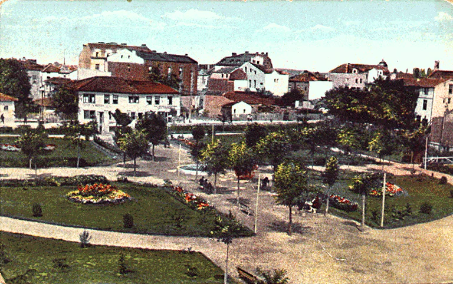
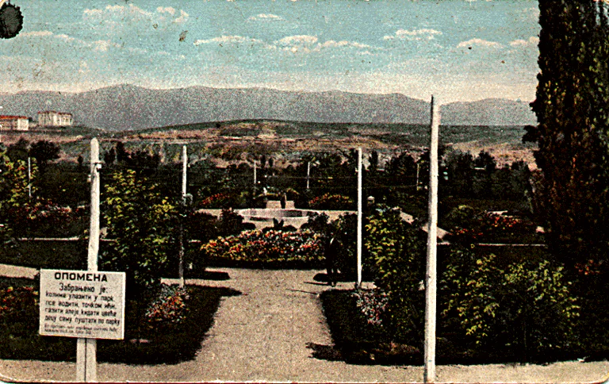
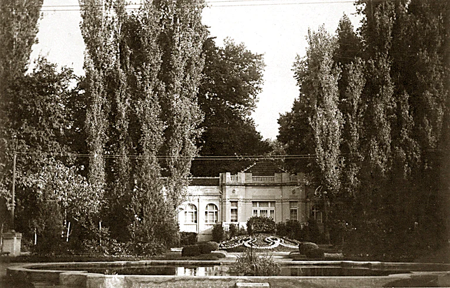
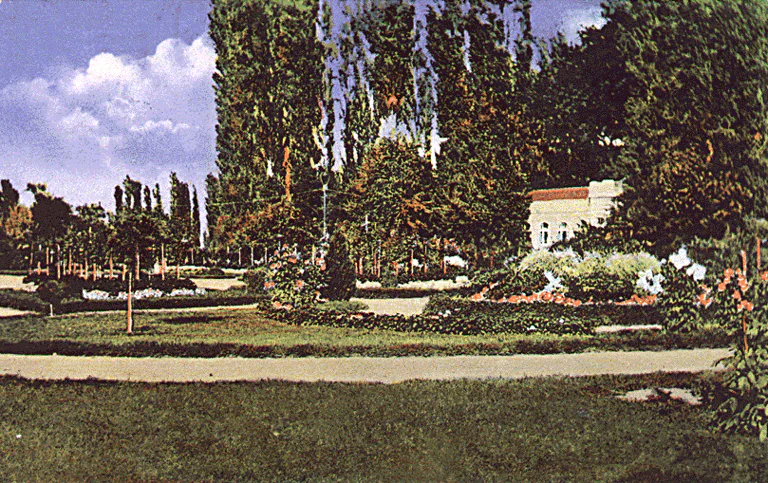

Park
Filmschau Nr. 25
- Aufnahme
- Kočo Nedkov
- Assistent
- P. Stefanovski
- Jahr
- 1951
- Dauer
- 00:33

Der Park Varoški nahe dem Platz, hinter der alten Post und der Bank - um 1930.

Stadtpark - um 1920

Der Stadtpark in Skopje - der Brunnen. Auf dem Schild steht: „Verboten ist es, mit dem Wagen in den Park zu fahren, Hunde mitzubringen, Rad zu fahren, die Rasenflächen zu betreten, Blumen zu pflücken, Kinder unbeaufsichtigt zu lassen“ - um 1920.

Der Brunnen im Stadtpark von Skopje.

Der Brunnen im Stadtpark im Winter. Im Hintergrund die Festung von Skopje - Kale - um 1920.

Ein Teil des Stadtparks - um 1920.

Der Park Islahane - 1920er Jahre.

Das Restaurant im Park Idadija - Teil des heutigen Stadtparks (um 1920)

Das Restaurant im Park Idadija - Teil des heutigen Stadtparks (um 1920)

Ein Teil des Stadtparks - um 1920.

Ein Teil des Stadtparks - um 1920.

Ein Teil des Stadtparks und der kleine Steg, den man „Pionierstegchen“ nannte. (1920er Jahre)

Filmschau Nr. 25
 Aquädukt4 Postkarten
Aquädukt4 Postkarten Kale30 Postkarten
Kale30 Postkarten Brücken60 Postkarten
Brücken60 Postkarten Kai58 Postkarten
Kai58 Postkarten Platz46 Postkarten
Platz46 Postkarten Bauten66 Postkarten
Bauten66 Postkarten Christliche Gotteshäuser19 Postkarten
Christliche Gotteshäuser19 Postkarten Muslimische Bauten33 Postkarten
Muslimische Bauten33 Postkarten Offiziersheim29 Postkarten
Offiziersheim29 Postkarten Theater28 Postkarten
Theater28 Postkarten Bahnhof13 Postkarten
Bahnhof13 Postkarten Schulen36 Postkarten
Schulen36 Postkarten Parks12 Postkarten
Parks12 Postkarten Märkte18 Postkarten
Märkte18 Postkarten Straßen38 Postkarten
Straßen38 Postkarten Panorama I60 Postkarten
Panorama I60 Postkarten Panorama II30 Postkarten
Panorama II30 Postkarten Collagen55 Postkarten
Collagen55 Postkarten Hochwasser9 Postkarten
Hochwasser9 Postkarten Erdbeben27 Postkarten
Erdbeben27 Postkarten Skopje 200026 Postkarten
Skopje 200026 Postkarten